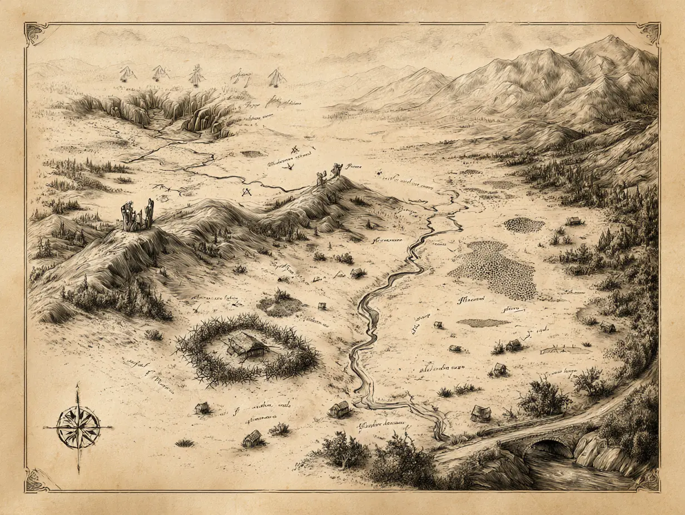
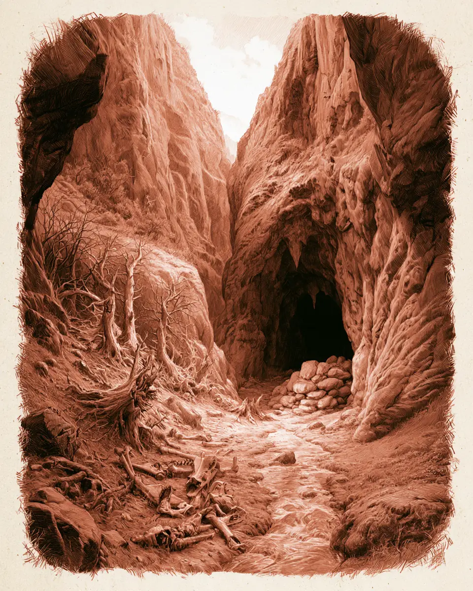
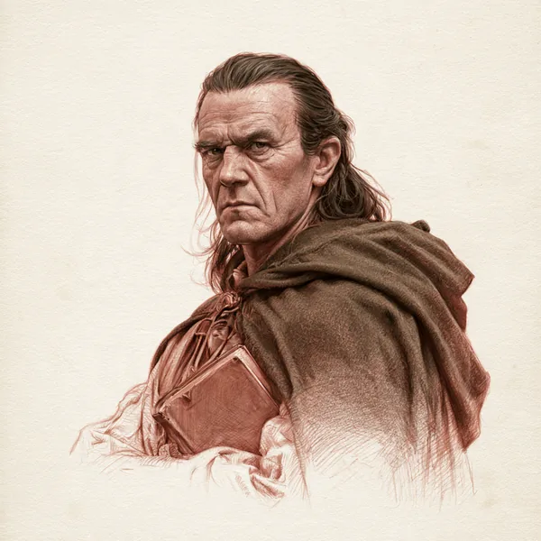
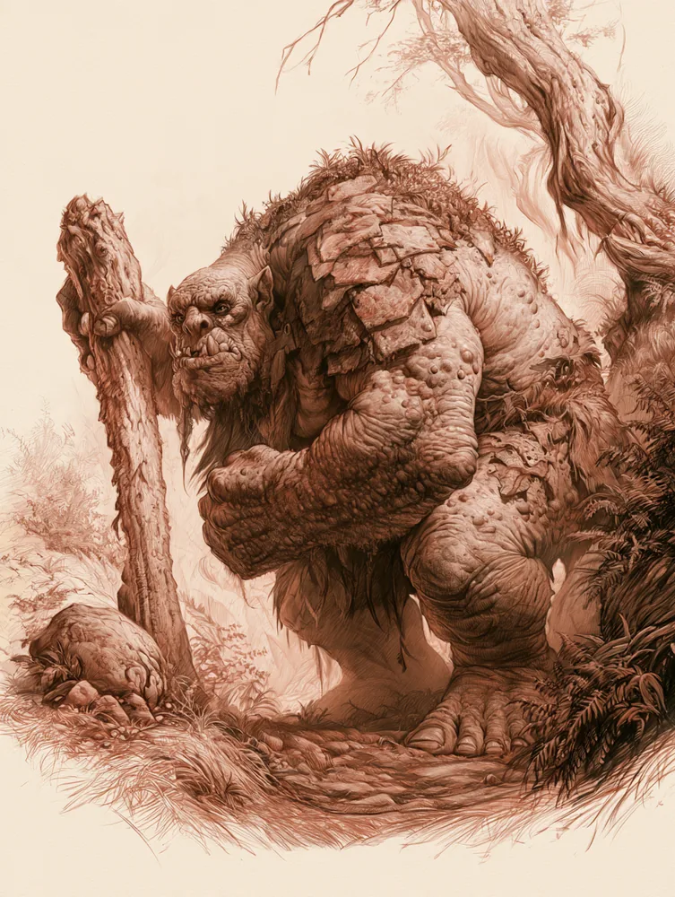
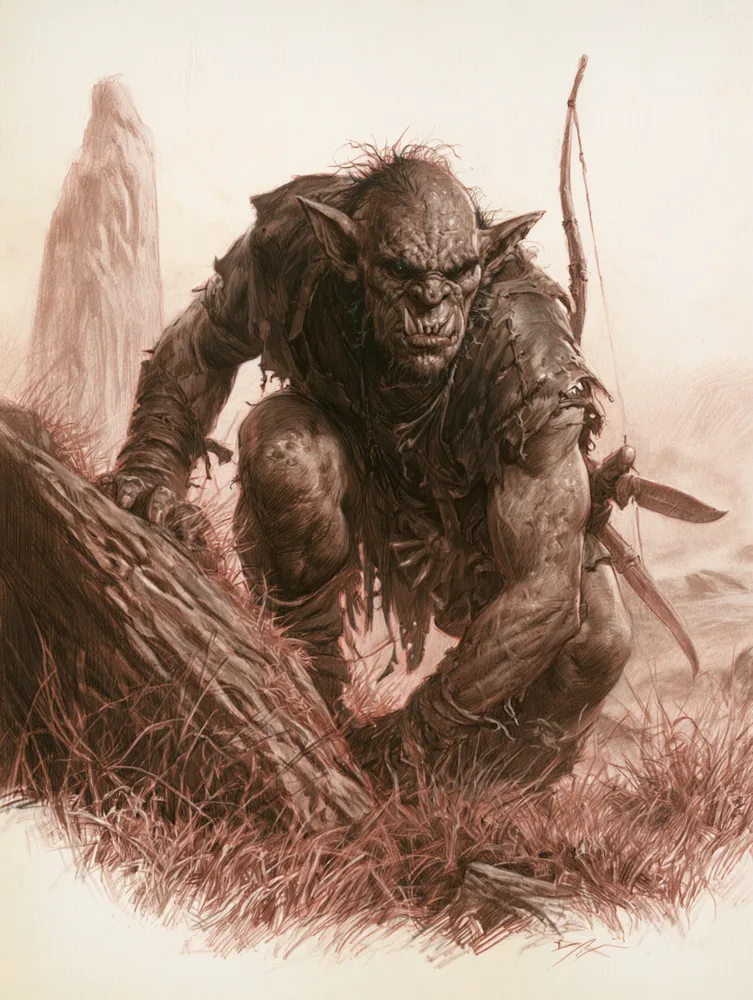

As Charnecas Etten Onde os Trolls nascem e o vento não para
Terras altas ao norte de Valfenda, entre o Fontegris e as Montanhas Nebulosas. Urze, turfa, pedra partida e vales fundos demais para o sol alcançar.
O lugar de onde vem o que desce
Quem mora em Bri acha que a Floresta de Pedra é o fim do mundo seguro. Quem vigia a Floresta de Pedra sabe que ela é só a borda. Ao norte dela, depois de dias de subida, a mata rala dá lugar a charnecas abertas, varridas por um vento que não cansa, cortadas por vales estreitos onde a luz entra tarde e sai cedo. Os antigos chamavam essas terras de Ettenmoors, as charnecas dos gigantes. É dali que desceram, geração após geração, os Trolls que dão nome às colinas mais ao sul.
Esta página prepara o terreno para uma aventura futura do site. Tudo aqui pode ser usado desde já: como destino de uma Companhia que venceu O Tesouro da Pedra Viva e quer saber de onde Kroga veio, como fronteira para uma campanha dos Rangers, ou como o lugar mais perigoso que os heróis já pisaram até agora.
| Onde fica | Ao norte da Estrada Leste e de Valfenda, entre o rio Fontegris a oeste e o sopé das Montanhas Nebulosas a leste. |
| Quem vive | Poucos pastores descendentes dos Homens das Colinas, em aldeias que mudam de lugar a cada poucos anos. Fora isso, Trolls, Orcs de passagem e animais que aprenderam a desconfiar de tudo. |
| Quem manda | Ninguém que um viajante gostaria de conhecer. Nos vales, o Troll mais forte. Nas ruínas, às vezes, algo que não devia mais estar lá. |
| Quem protege | Os Rangers do Norte, em patrulhas raras e longas, e caçadores de Valfenda que sobem de tempos em tempos atrás de Orcs. |
| O perigo central | Os Trolls das colinas dos Vales Etten, mais espertos e mais organizados que os Trolls de pedra do sul. |
Nomes. Usamos Charnecas Etten como forma corrente em português e deixamos Ettenmoors como o nome que aparece nos livros e na boca de Rangers e Elfos. Os vales fundos onde os Trolls fazem covil são os Vales Etten (Ettendales). O rio que nasce ali e corre para o sul até a Última Ponte é o Fontegris (Hoarwell, Mitheithel em élfico).
A terra que traiu o próprio reino
Quando Arnor se partiu em três, estas charnecas ficaram com Rhudaur, o mais pobre e mais selvagem dos reinos irmãos. Os Dúnedain de Rhudaur eram poucos e governavam de longe uma gente que nunca os quis: os Homens das Colinas, antigos moradores destas terras, criadores de gado e donos de uma teimosia que nenhum decreto resolvia.
A aliança com Angmar
Quando o reino de Angmar se ergueu no norte, os Homens das Colinas viram uma chance. Com o tempo, os últimos senhores Dúnedain de Rhudaur foram derrubados, e o reino passou a ser governado por chefes que se aliaram em segredo ao Rei-Bruxo. Rhudaur deixou de ser fronteira de Arnor e virou porta de entrada para os exércitos de Angmar descerem contra os reinos irmãos. As fortalezas que os Dúnedain ergueram para vigiar o norte passaram a vigiar o sul.
Depois da queda
Angmar caiu, mas deixou para trás o que sempre deixa: ruínas que ninguém quer reocupar, túmulos que ninguém quer abrir, e criaturas que se acostumaram a viver em terra sem lei. Os Trolls, que Angmar usava como tropa de choque, não foram embora com o Rei-Bruxo. Voltaram para os vales, se multiplicaram e esqueceram a quem serviam. Pelo menos é o que se espera.
As Charnecas Etten carregam duas camadas de passado, e as duas servem de tema. A primeira é a traição: Rhudaur é o reino que se voltou contra os irmãos, e isso ainda pesa sobre os descendentes dos Homens das Colinas, que os Rangers tratam com desconfiança e vice-versa. A segunda é a Sombra adormecida: tudo aqui já serviu a Angmar uma vez. Se algo começar a despertar no norte, estas charnecas vão sentir primeiro.
Urze, turfa e vento
As Charnecas Etten não têm estrada. Têm trilhas de gado que somem na chuva, cristas de pedra que servem de referência quando o nevoeiro deixa, e um céu enorme que muda de humor várias vezes no mesmo dia. No verão, a urze floresce roxa e as charnecas parecem quase gentis. No resto do ano, são cinza, molhadas e frias até os ossos.

As terras altas
Planaltos abertos de urze e capim duro. Dá para ver longe, e ser visto de longe também. Os poucos marcos são pilhas de pedra deixadas por pastores e pedras erguidas de Rhudaur, meio tombadas.
Os brejos de turfa
Entre as cristas, o chão afunda em brejos escuros que parecem firmes até o pé afundar até o joelho. Os pastores cortam turfa para queimar; os viajantes aprendem a respeitá-los do jeito difícil.
As nascentes do Fontegris
O rio que passa sob a Última Ponte nasce aqui, em dezenas de riachos gelados que se juntam descendo para o sul. Seguir o rio é o jeito mais seguro de entrar e sair das charnecas sem se perder.
O sopé das Montanhas
A leste, o terreno sobe em encostas quebradas até as Montanhas Nebulosas. Trilhas antigas cruzam para passagens altas que só Anões e Orcs ainda usam.
O que fica em volta
| Direção | O que há |
|---|---|
| Sul | A Floresta de Pedra e a Estrada Leste, com a Última Ponte como ponto de partida mais comum para quem sobe. Mais a sudeste, Valfenda. |
| Leste | As Montanhas Nebulosas, com suas passagens altas e o que se esconde embaixo delas. |
| Norte | Terras cada vez mais frias rumo às ruínas de Angmar e ao Monte Gram, de onde descem bandos de Orcs. |
| Oeste | O vale do Fontegris e, além dele, as terras vazias entre o Topo do Vento e as Colinas do Norte. |
Não há estrada, então não há bônus de estrada. Trate as charnecas abertas como Terra Selvagem e os Vales Etten e as terras ao norte da Torre Partida como Terra Sombria. O clima é o inimigo constante: fora do verão, considere que qualquer evento de Journey ligado a frio, chuva ou nevoeiro pesa mais, e que o Guide tem trabalho dobrado para manter a Companhia no rumo.
Onde o sol chega tarde

Ao norte das charnecas abertas, o terreno se parte em vales estreitos e fundos, cortados por riachos e cercados por paredes de pedra tão altas que o sol só toca o fundo por poucas horas no meio do dia. São os Vales Etten, e é neles que os Trolls das colinas fazem covil.
Um vale habitado se reconhece antes de ser visto. Árvores arrancadas pela raiz. Ossos de gado roídos e jogados longe. Pedras empilhadas sem razão aparente. Um cheiro que o vento traz de longe e que nenhum caçador esquece depois de sentir uma vez.
Trolls das colinas
Os Trolls que vivem aqui não são como Kroga. São maiores que os Trolls de pedra do sul, andam em pequenos grupos e têm algo que se parece perigosamente com ordem: um mais velho manda, os outros obedecem, e os covis se ajudam quando há comida para dividir. Ainda temem o sol, ainda caçam de noite, mas planejam. Um viajante que acha que vai enganar um Troll das colinas com a mesma facilidade de uma história de ninar costuma não voltar para contar.
Se a sua mesa jogou O Tesouro da Pedra Viva, as Charnecas Etten são a resposta natural para a pergunta "de onde ela veio?". Uma possibilidade: Kroga foi expulsa de um dos Vales Etten muito tempo atrás, por ser lenta demais para acompanhar o clã. Outra: foi mandada para o sul de propósito, para vigiar a Estrada. A segunda é bem mais preocupante.
A fortaleza que mudou de lado
Numa crista alta que domina metade das charnecas, sobra o que já foi uma torre de vigia de Rhudaur. Um raio, ou um cerco, ou os dois, abriu a torre de cima a baixo, e o nome que os pastores dão a ela vem daí: a Torre Partida. Metade ainda está de pé. A outra metade é um monte de pedra coberto de musgo que desce a encosta.
A torre foi erguida pelos Dúnedain para vigiar o norte. Depois que os senhores de Rhudaur se aliaram a Angmar, passou a vigiar o sul. Os pastores evitam a crista inteira e não gostam de explicar por quê. Os mais velhos dizem que o último senhor da torre jurou fidelidade ao Rei-Bruxo e que o juramento não terminou quando ele morreu.
| Parte | O que há |
|---|---|
| O pátio | Muros baixos, um poço seco e sinais recentes de fogueira. Alguém usa o lugar como abrigo de passagem, e não são pastores. |
| A metade de pé | Três andares de escada estreita, o último aberto para o vento. Lá de cima se vê até o Fontegris num dia claro. |
| Os porões | Selados por um desabamento antigo. Um dos pastores jura ter ouvido batidas do outro lado das pedras numa noite sem vento. |
O Mestre decide o que está nos porões. Pode ser nada além de ecos e medo. Pode ser o túmulo do último senhor traidor de Rhudaur, com algo que ainda guarda seu juramento. Pode ser um depósito de armas de Angmar que os Orcs do Monte Gram gostariam muito de encontrar primeiro. Esta página deixa a porta fechada de propósito: é o coração da aventura que vem.
Pastores, caçadores e quem não devia estar aqui
Os pastores das colinas
Descendentes dos antigos Homens das Colinas, criam ovelhas e gado magro em aldeias pequenas que mudam de vale conforme a turfa, o pasto e os Trolls permitem. São desconfiados, orgulhosos e lembram melhor do que ninguém o que os Dúnedain fizeram e deixaram de fazer por eles. Não se consideram herdeiros de nenhuma traição: para eles, a história é outra, e quem a conta direito é o avô, não o Ranger.
Os Rangers do Norte
Sobem às charnecas em patrulhas longas, de semanas, geralmente para rastrear bandos de Orcs antes que cheguem à Estrada. Conhecem as trilhas, os brejos e os vales que não se deve entrar. A relação com os pastores é de respeito frio: um ajuda o outro quando precisa, mas ninguém esquece de quem é neto.
Caçadores de Valfenda
De tempos em tempos, Elfos da casa de Elrond sobem às charnecas caçando Orcs com uma dedicação que os próprios Rangers acham quase assustadora. Não param em aldeias, não pedem abrigo e raramente falam com quem não conhecem.
Anões de passagem
Trilhas antigas ligam o sopé das Montanhas Nebulosas às passagens altas. Anões das Montanhas Azuis a caminho do leste às vezes preferem esse caminho à Estrada, por motivos que não compartilham.
Aqui, o silêncio é diferente do silêncio da Floresta de Pedra. Lá, as pessoas falam baixo por medo. Aqui, falam pouco por hábito e por orgulho. Um pastor mede o estrangeiro de cima a baixo antes de responder qualquer pergunta, e a primeira resposta quase sempre é outra pergunta: "de quem você é?". Quem chega junto de um Ranger é recebido de um jeito; quem chega sozinho, de outro.
Quem a Companhia encontra aqui
Todos os personagens desta página são originais do site. Baradan vem de A Floresta de Pedra e pode servir de ponte entre as duas regiões.

Um Ranger alto e magro, de cabelo já grisalho, que lidera as patrulhas nas charnecas havia quinze anos. Conhece cada vale pelo cheiro e mantém um caderno de couro com o nome de cada Troll que já viu e onde. Tem pouca paciência com os pastores e menos ainda com quem aparece nas charnecas por curiosidade. É amigo antigo de Baradan, e se Baradan confia na Companhia, Belegorn aceita ouvir. Aceitar ouvir não é o mesmo que concordar.
"As charnecas não perdoam pressa. Nem coragem demais."

Um homem baixo e largo, de barba ruiva desbotada, com um olho turvo que deu origem ao apelido. É o melhor guia das charnecas que não usa capa de Ranger, e sabe disso: cobra caro, em prata ou em favores. Conhece as aldeias, os brejos e as histórias da Torre Partida, e é a única pessoa disposta a levar estrangeiros até lá. Não gosta de Belegorn, e o sentimento é recíproco. Os dois se respeitam mais do que admitiriam.
"Meu avô dizia que a torre não caiu. Ela se ajoelhou."
Rostos para vigiar

O Troll das colinas mais velho dos Vales Etten, e o que manda nos outros. Maior que Kroga, mais lento para se irritar e muito mais esperto. Usa uma couraça remendada de placas enferrujadas que ninguém sabe de onde veio, e fala a língua dos homens mal, mas o bastante para barganhar. Nos últimos invernos, anda inquieto: os pastores dizem que ele passa noites inteiras olhando para a Torre Partida. Ficha completa na aventura das Charnecas Etten, a ser publicada.

Um bando de Orcs do Monte Gram que pinta os dentes com fuligem e desce às charnecas com frequência cada vez maior. Não atacam aldeias grandes nem enfrentam Trolls de frente: rondam, observam e parecem procurar alguma coisa. Os Rangers já encontraram marcas deles no pátio da Torre Partida. Ficha completa na aventura das Charnecas Etten, a ser publicada.
O único lugar seguro, e só às vezes
Numa dobra do vale do Fontegris, escondido atrás de um paredão de espinheiros que ninguém plantou por acaso, os Rangers mantêm um acampamento de pedra baixa e lona encerada. Não aparece em mapa nenhum e muda de dono conforme a patrulha que está nas charnecas. Quando a Companhia chega com um Ranger, ou com a recomendação de um, pode descansar ali.
| O herói quer | No Acampamento do Espinheiro |
|---|---|
| Descansar com segurança | Fogo baixo, abrigo do vento e vigília dos Rangers. Suficiente para recuperar Fadiga, não para uma Fase da Companhia completa. |
| Saber o que se move nas charnecas | O caderno de Belegorn, se ele estiver de bom humor. Rastros recentes de Orcs e Trolls, e quais vales evitar esta semana. |
| Um guia até a Torre Partida | Os Rangers não levam ninguém lá sem motivo. Cadoc leva qualquer um, pelo preço certo. |
| Reabastecer | Pouco. Carne seca, água limpa e alguma erva de cura. Para o resto, só em Valfenda ou de volta na Última Ponte. |
Para uma Fase da Companhia completa, o refúgio natural de quem explora as Charnecas Etten é Valfenda. Planeje a expedição como ida e volta: sair de Valfenda ou da Última Ponte, subir o Fontegris, usar o Espinheiro como escala e voltar antes que o inverno feche as trilhas.
O que ronda as Charnecas Etten
Nas charnecas, a ameaça raramente vem sozinha. Trolls atraem Orcs que querem usá-los; Orcs atraem Rangers que querem detê-los; e tudo isso acontece sobre ruínas de um reino que já escolheu o lado errado uma vez.
| Ameaça | Como aparece na mesa |
|---|---|
| Trolls das colinas | Gado sumido, árvores arrancadas, pegadas enormes na lama perto das aldeias. Em anos ruins, um Troll desce até a Estrada e vira problema da Floresta de Pedra. |
| Os Dentes-Negros | Fogueiras apagadas às pressas, flechas negras, pastores que somem do pasto mais alto. Procuram algo, e a Companhia pode descobrir o quê. |
| O inverno | Nevoeiro que cai em minutos, neve fora de época, brejos congelados que cedem. O inimigo mais constante e o mais fácil de subestimar. |
| Lobos | Alcateias que seguem os Orcs para comer as sobras e, quando a fome aperta, caçam por conta própria. |
| O juramento da Torre | Batidas sob as pedras, frio fora de hora, animais que se recusam a subir a crista. O Mestre decide o quanto é real. |
O suplemento de Eriador aprofunda o Reino Perdido e o legado de Angmar, e as Charnecas Etten ficam no caminho natural entre Valfenda e as terras do Rei-Bruxo. Use a Torre Partida como primeiro passo de uma campanha que suba cada vez mais para o norte, rumo ao que Angmar deixou para trás.
O que se ouve junto ao fogo
Role um Success Die quando um herói passar uma noite conversando no Acampamento do Espinheiro, numa aldeia de pastores ou na Última Ponte com alguém que desceu das charnecas. Em um grande êxito numa rolagem de INSIGHT, o herói também sabe se o rumor é verdadeiro.
| 1 | "Brógar juntou os clãs dos vales. Nunca vi tantos Trolls andando juntos." Verdadeiro. Ninguém sabe ainda por quê. |
| 2 | "Os Orcs de dentes pretos estão cavando na Torre Partida." Meio verdadeiro. Tentaram, e alguma coisa os fez parar. |
| 3 | "Kroga era filha de Brógar. Foi mandada para o sul como castigo." Falso, mas os pastores acreditam, e Brógar pode querer saber quem a derrotou. |
| 4 | "Cadoc tem um mapa dos porões da Torre. Herdou do avô." Verdadeiro. Ele nunca mostrou para ninguém. |
| 5 | "Uma aldeia inteira de pastores sumiu do vale do Fontegris no último inverno." Verdadeiro. Mudaram de lugar às pressas, e não foi por causa dos Trolls. |
| 6 | "Belegorn anda escrevendo para Valfenda com mais frequência. Alguma coisa o preocupa." Verdadeiro. Gancho para Gaerlin ou Baradan chamarem a Companhia. |
Ganchos de aventura
Continuação direta do gancho da Floresta de Pedra. Baradan seguiu as pegadas do outro Troll até as charnecas e não voltou. Belegorn pede ajuda para encontrá-lo antes que as trilhas fechem com o inverno.
A Companhia encontra uma aldeia de pastores abandonada com a comida ainda na mesa. Cadoc conhece as famílias e quer saber para onde foram. A trilha leva à crista da Torre Partida.
Brógar manda um recado, do jeito que só um Troll manda: um pastor vivo, apavorado, com uma mensagem decorada. O Velho do Vale quer conversar. Sobre a Torre, sobre os Orcs, e sobre algo que ele tem medo de acordar.
Material de fã, sem fins comerciais. Baseado em O Senhor dos Anéis de J.R.R. Tolkien e em O Um Anel 2ª edição, da Free League. A Torre Partida, o Acampamento do Espinheiro e todos os personagens desta página são originais do site.